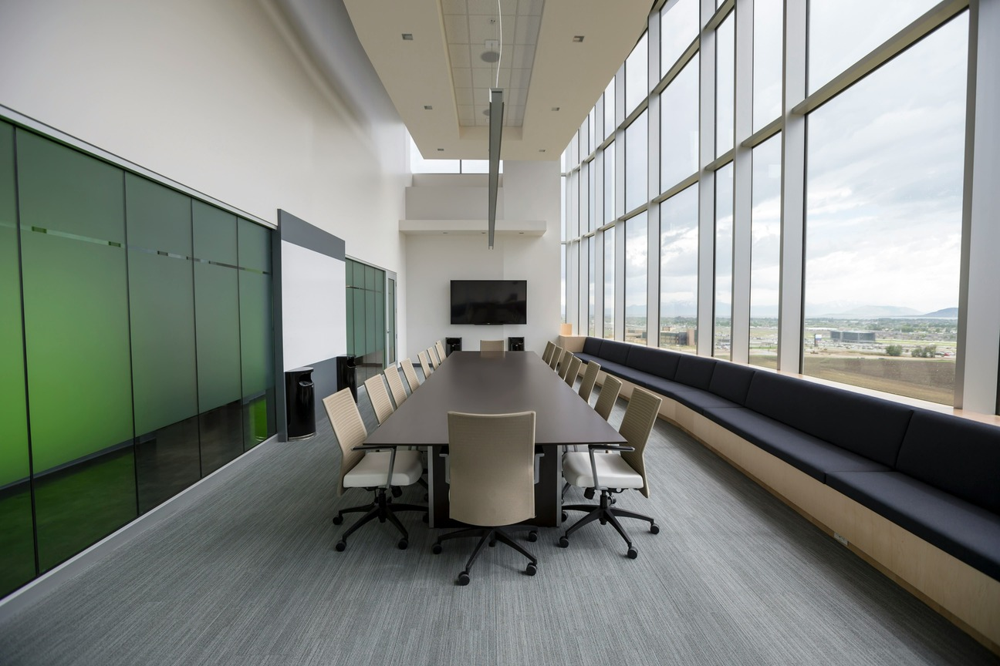

私たちFLURNAは、企業の成長と社会的価値の創造を「共に」実現していく存在でありたいと考えています。 単なる税務や会計の枠を超え、経営者の想いやビジョンに寄り添いながら、健全で持続可能な経営の「土台」を築くこと。 それが私たちの使命です。数字の背後にある想いを汲み取り、共に悩み、共に築いていく。そんな関係性を何より大切にしています。
FLURNAの強みは、税務・会計の専門性に加え、IT・業務設計・資金調達など多面的なアプローチが可能な点にあります。 クラウド会計導入や業務フロー改善など、実務レベルでの最適化はもちろんのこと、経営者が「考えることに集中できる環境づくり」を支援することが私たちの役割です。 デジタルと人的支援を融合させ、課題を根本から見つめ直し、企業の未来に繋がる本質的なサポートを提供します。
経営に「正解」はありません。常に選択と判断の連続のなかで、時に不安や孤独を感じることもあると思います。 私自身も、経営者と同じ視座で悩み、模索しながら歩んできました。だからこそ、数字や制度の「知識」だけでなく、心からの「共感」と「伴走」を大切にしたいのです。 一緒に考え、一緒に超えていく。そんな温度のある関係を築けたなら、それ以上に嬉しいことはありません。
クラウド会計やシステム導入で、日々の業務を効率化します。
現状の業務を分析し、無理・無駄を省いた最適な業務設計を行います。
資金繰りや金融機関との交渉支援など、経営の安心を支えます。
中長期的に成長できる経営基盤づくりを、税務・会計面から支援します。
FLURNA税理士事務所は、共に成長し続けるパートナーとして、あなたの経営を支援します。